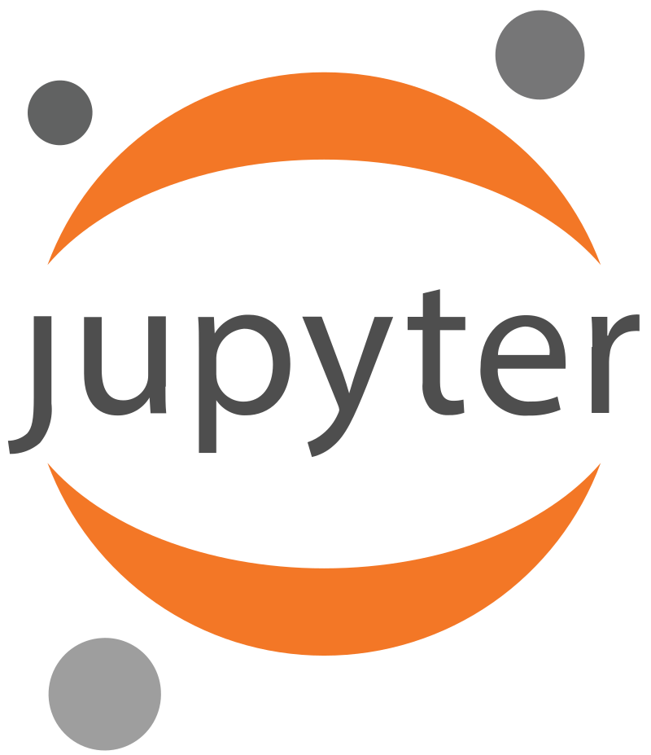
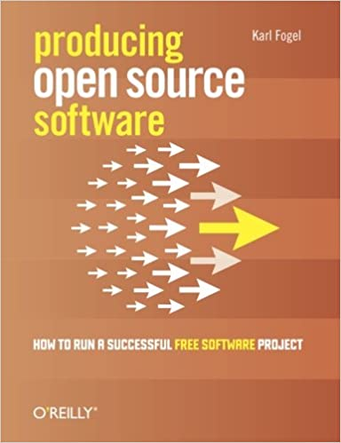

class: title-slide <div align="center" style="padding-top: 2rem;"> <p>Managing Research Software Projects</p> <h1>Introduction</h1> <p> <img src="../files/codebender.svg" alt="logo" width="20%" /> </p> </div> --- class: subhead ## Starting Point <blockquote> A 10X engineer is one who can bring together ten other engineers and emerge with a shared understanding and rough consensus of the problem being solved and work that needs to be done. <br/> — <a href="https://twitter.com/norootcause/status/1441828577314369544">Lorin Hochstein</a> </blockquote> <blockquote> In this house we call them "project managers". <br/> - <a href="https://twitter.com/gvwilson/status/1442467916012822535">Greg Wilson</a> </blockquote> --- ## Research Software - Software that is created and run to answer specific questions - Usual starting point: - The software is just a piece of laboratory equipment - Papers, theses, and other reports are the product - But if the software becomes more popular: - Focus becomes building and sharing software that many colleagues can use - Like designing and building telescopes in astronomy <div align="center"> <p> <a href="https://yt-project.org/"><img src="../files/yt_logo.png" alt="yt Project Logo" width="20%" /></a> <a href="https://mlr3.mlr-org.com/"><img src="../files/mlr.png" alt="mlr3 Project Logo" width="20%" /></a> <a href="https://cellprofiler.org/"><img src="../files/cellprofiler.png" alt="CellProfiler Project Logo" width="20%" /></a> </p> </div> --- ## Meet Jess - Doing their PhD in ecology - Simulating changes in the ranges of several rodent species in the face of climate change - Validating against dozens of datasets collected by previous students in their supervisor's lab - Which all need to be cleaned up and put in a consistent format <div align="center"> <p> <img src="../files/jess.svg" alt="Jess Avatar" width="30%" /></a> </p> </div> --- ## Three Years Ago… - Jess started grad school - Could write hundred-line Python programs with lists, loops, and functions using the [Jupyter notebook][jupyter] - Learned it in their one and only undergrad programming course - Knew enough HTML and CSS from a high school workshop to tweak their web page on the lab site <div align="center"> <p> <a href="https://jupyter.org/"></a> </p> </div> --- ## Their Goals - Write and revise thesis and papers (collaboratively) - Priority #1: get the data into a consistent format - Also priority #1 (according to their supervisor): write the simulation program - Which will probably be 1000-1500 lines long - I.e., ten times larger than any program they've ever written <div align="center"> <p> </p> </div> --- ## The Journey So Far - Divide code into multiple files and use `import` - Organize according to [Noble's Rules][noble-rules] [<a href="../bibliography/#Noble2009">Noble2009</a>] - Data in one folder - Shared code in another - One folder per paper/project with analysis scripts - Shared Google Docs for papers - Because it's so much easier than the alternatives - And it gives them an excuse to talk to the lab's LaTeX expert, who's kind of cute <div align="center"> <p> <img src="../files/jess.svg" alt="Jess Avatar" width="20%" /></a> <img src="../files/savi.svg" alt="Savi Avatar" width="20%" /></a> </p> </div> --- ## The Journey So Far - [MIT license][mit-license] for software - Lab standard: they just copied the file into their repo - Using Git and [GitHub][gh] with the [GitKraken][gitkraken] GUI - No branching and no collaborators: just a backup tool <div align="center"> <p> <a href="https://github.com/"><img src="../files/github.svg" alt="GitHub logo" width="20%" /></a> <a href="https://www.gitkraken.com/"><img src="../files/git-kraken.svg" alt="Git Kraken logo" width="20%" /></a> </p> </div> - Managing other people isn't a problem yet - Managing their own time is - Just started using GitHub issues as a to-do list --- ## Me - Don't remember much statistics… - …but I've built a lot of complicated software… - …and I've been lucky enough to hang out with some very smart people <div align="center"> <p> <img src="../files/beautiful-code.png" alt="Cover of 'Beautiful Code'" /> <img src="../files/making-software.jpg" alt="Cover of 'Making Software'" /> <img src="../files/aosa1.png" alt="Cover of 'Architecture of Open Source Applications (volume 1)'" /> <img src="../files/aosa2.png" alt="Cover of 'Architecture of Open Source Applications (volume 2)'" /> </p> <p> <img src="../files/carpentries.svg" alt="Carpentries logo" /> </p> </div> --- class: sidebar ## Acknowledgments - Daniel Standage for helping create the original workshop - Karl Fogel for *[Producing Open Source Software][producing-oss]* - Damien Irving, Kate Hertweck, Luke Johnston, Joel Ostblom, and Charlotte Wickham for *[Research Software Engineering with Python](https://merely-useful.tech/py-rse/)* - Alexandra Elbakyan for [SciHub][sci-hub] - And everyone cited in <a href="../bibliography/">the bibliography</a> <div align="center"> <p>  <img src="../files/py-rse-cover.png" alt="Cover of 'Research Software Engineering with Python'" width="20%"/> <img src="../files/sci-hub.jpg" alt="SciHub logo" width="20%"/> </p> </div> --- class: exercise ## Where Are You Now? 1. Who uses your software? 1. How do they find it? 1. Who decides what will happen next? 1. How is that communicated? 1. Who can make what kinds of changes? 1. What happens automatically? 1. How are newcomers brought on board? [gh]: https://github.com/ [gitkraken]: https://www.gitkraken.com/ [jupyter]: https://jupyter.org/ [mit-license]: https://opensource.org/licenses/MIT [noble-rules]: https://journals.plos.org/ploscompbiol/article?id=10.1371/journal.pcbi.1000424 [producing-oss]: https://producingoss.com/ [sci-hub]: https://sci-hub.se/